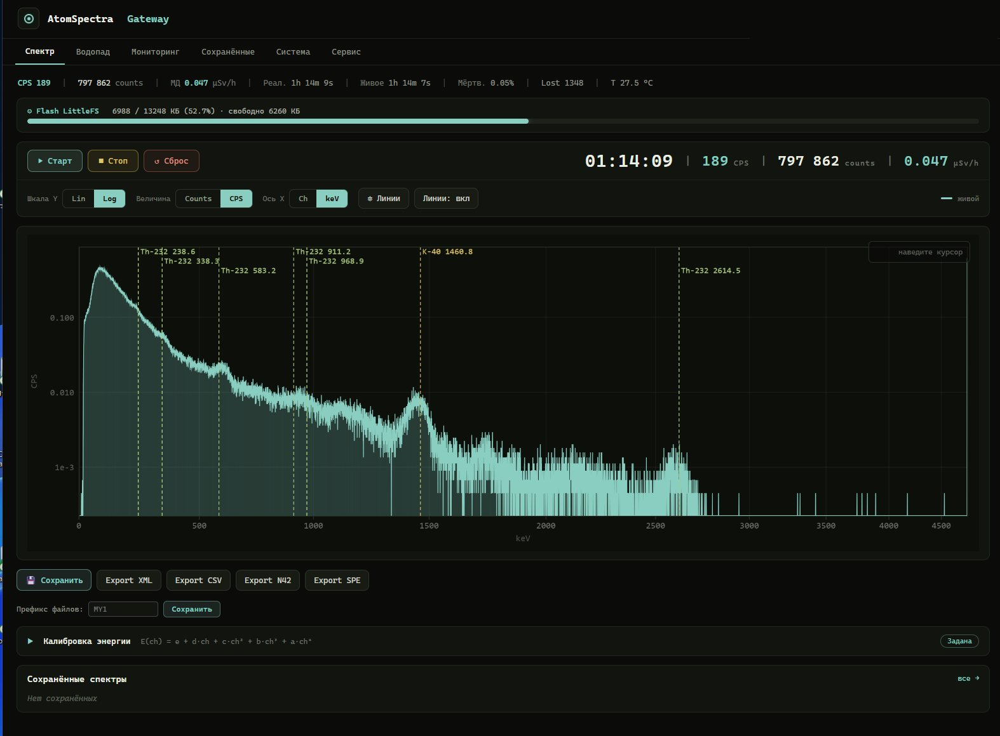
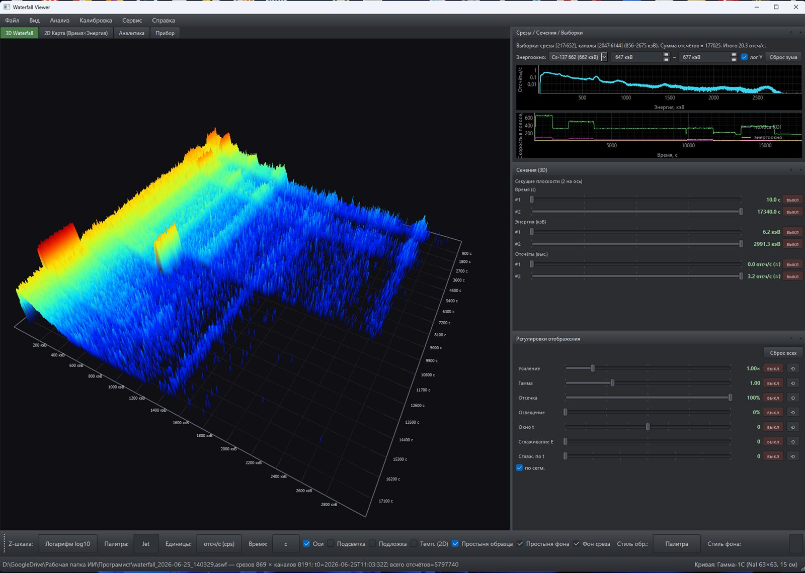
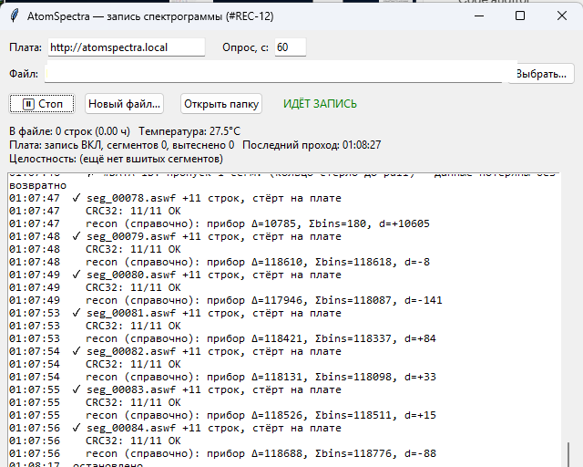
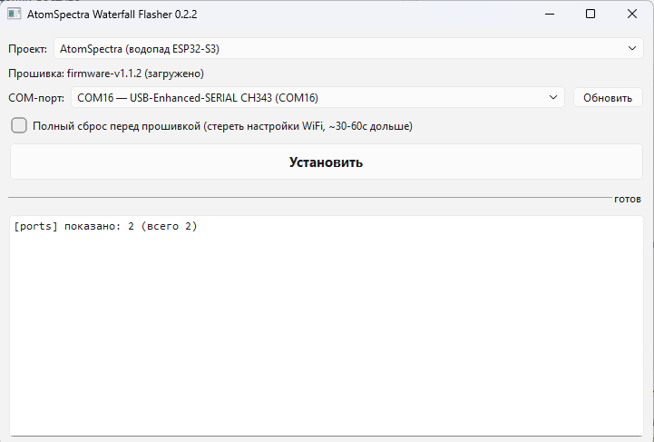

Экосистема — 5 репозиториев
подробнее ↓WiFi-шлюз — прошивка ESP32-S3, спектр в браузере firmware-v1.1.2 02 waterfall-viewer
просмотрщик спектрограмм — 3D/2D, срезы, нуклиды v0.1.10 03 wf-recorder
непрерывная запись водопада на диск ПК v0.2.1 04 atomspectra-waterfall-esp32-flasher
прошивальщик плат — прошивка с GitHub Releases по USB v0.2.2 05 esp32s3-diag
диагностика USB Host — «рентген платы» при проблемах связи v0.2.0
Программирование и сборка не требуются: на страницах релизов — готовые .exe для Windows, прошивка платы заливается флешером в несколько кликов.
Компоненты

atomspectra-waterfall-esp32
прошивка · ESP32-S3Сердце комплекта: плата ESP32-S3 подключается к спектрометру по USB (OTG Host) и заменяет телефон или ПК — спектр смотрят в браузере с любого устройства в той же сети. Web UI показывает живой 8192-канальный спектр с маркерами линий и мощностью дозы, водопад накоплений и мониторинг платы; в поле шлюз сам поднимает точку доступа и работает от павербанка. Накопленное хранится на flash (до ~400 спектров) и выгружается прямо из браузера в форматах BecqMoni, InterSpec, N42.42 и ЛСРМ .spe. Для десктопного ПО открыт TCP-мост (порт 8234): BecqMoni или wf-recorder получают поток так, будто прибор подключён напрямую.

waterfall-viewer
desktop · Windows / PythonАнализ длительных записей: суточный лог разворачивается в 3D-поверхность или 2D-карту «время × энергия», где короткий всплеск активности или дрейф фона виден сразу — без перебора сотен спектров вручную. Любой момент записи раскрывается в обычный спектр, любая энергетическая линия — в график её хода во времени; выделенный ROI сверяется с библиотекой 21 нуклида. Читает .aswf, RadiaCode .rcspg и N42.42; многочасовые файлы грузятся потоково, без загрузки целиком в память.

wf-recorder
desktop · Windows / stdlibСтраховка длинных сессий: клиент на ПК периодически забирает сегменты водопада со шлюза и сшивает их в единый .aswf — суточная запись не зависит от открытой вкладки браузера и переживает обрывы WiFi. Сегмент удаляется с платы только после подтверждённой записи на диск (fsync); целостность контролируют CRC32 и порядковые номера, поэтому пропуск в записи виден сразу, а не при разборе данных. Параллельно ведёт лог температуры платы в CSV; на странице релизов — готовый .exe без зависимостей.

atomspectra-waterfall-esp32-flasher
desktop · Windows / PythonУбирает главный барьер — прошивку платы: вместо esptool и командной строки — окно с двумя списками. Флешер сам находит COM-порт, скачивает актуальный релиз прошивки с GitHub и заливает его по USB в несколько кликов; обновление на новую версию — та же процедура. Один инструмент обслуживает четыре проекта: AtomSpectra, AtomFast, Radex, RadonEye.

esp32s3-diag
прошивка · ESP32-S3 + флешер«Рентген платы» на случай, когда прибор и шлюз не видят друг друга: диагностическая прошивка прогоняет цепочку Boot → WiFi → USB Host → Enum → Detect → Handshake и показывает в Web UI, на каком именно звене обрывается связь. Читает USB-дескрипторы и endpoints, выполняет FTDI vendor init и пробует SHPROTO-рукопожатие — вместо гадания по симптомам получается точный диагноз. Ставится one-click флешером; перед тестами обязателен backup настроек прибора (см. README), после — возврат штатной прошивки тем же флешером.
Как связаны компоненты
Форматы
| Формат | Шлюз | Вьюер | Назначение |
|---|---|---|---|
| .aswf | пишет | читает | нативный водопад |
| N42.42-2011 | экспорт | читает | индустриальный обменный формат |
| BecqMoni XML | экспорт | — | анализ в BecqMoni |
| InterSpec CSV | экспорт | — | анализ в InterSpec (Sandia) |
| ЛСРМ .spe | экспорт | — | гамма-анализ SpectraLine |
| RadiaCode .rcspg | — | читает | кросс-совместимость с RadiaCode-110 |
В разработке
Запись на внешние носители
Сохранение водопада напрямую на SD-карту платы — многосуточные записи без ПК и без ограничения объёмом встроенного flash.
Подключение GPS
Привязка каждого спектра к координатам приёмника — трек измерений вместе с данными в одном файле.
Поиск и картирование загрязнений
GPS + автономное питание + непрерывная запись превращают комплект в инструмент обследования местности: поиск источников и картирование радиоактивных загрязнений.
Шлюз и флешер взаимодействуют с оборудованием напрямую. Опция очистки спектра при старте шлюза стирает накопленные на приборе данные — сохраните их штатным ПО заранее. Флешер перезаписывает flash выбранной платы: проверяйте COM-порт, посторонние USB-устройства прошивать нельзя. Полный текст условий — в README каждого репозитория.